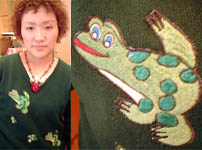
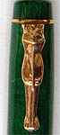
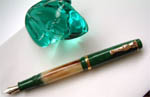
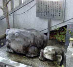
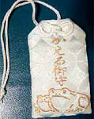
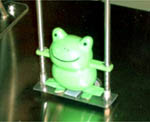
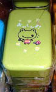
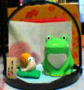

|
 カエルトレーナー店員発見！【福岡発爪姫様】土曜日に靴姫様と、お買い物をしていたらかわいいカエルトレーナーを着た店員さんにあったので写真に撮りました。私的には、かえるの隣に、きのこ柄もあったのでそっちにも引かれてしまいましたが…。というわけでカエルな写真を送りまーす。
【全国かえる奉賛会】うわあああ。デパガも最近は制服廃止したところが多いから、個人の感性問われるよねえ。彼女は、カエルファッションなんだあああ。いいなあああ。きのこもついてて、とってもかわいいねえ。それ売ってくれええええ。
すごいぞおおおおっ！かえる万年筆！ 【秋田発カエルのいづ吉同志記者】これは鳥取の手づくり万年筆店「万年筆博士」で、９７年に作っていただいたものです。キャップとボディ後部は緑のセルロイド、ボディの中心部はアイボリーの水牛の角から出来ており、イラスト描き用（もちろん文字も書けますが）にペン先が調整されています。万年筆の製作は田中晴美氏（男性）。ボディの製作からペン先調整まで一貫して一人でこなす、万年筆職人としては日本で希少な人物です。またカエルクリップは１４金製で、鍛金美術家のＹ先生の手によるもの。 カエル万年筆誕生のきっかけは、同店の社長・山本雅明氏に「イラスト用の万年筆を作っていただきたいのですが…」と相談したときのこと。 「せっかく作るのですから、クリップの部分をカエルにしてみませんか？」
 それは以前から親交のあったお陰で、私の＜カエル趣味＞を嫌がうえにもよく知っている、山本さんの粋な申し出でした。私は嬉しさに鼻穴をふくらませながら、早速、カエルクリップのデザインを数点描きました。当初私としてはキャップにカエルが巻き付く感じのクリップにしたかったのですが、万年筆だけに実用性を伴うものなので、重さや形のバランスを考えた末に、最終的に画像にある一番シンプルな形に決定したのです。クリップの製作は、鳥取在住の鍛金美術家・Ｙ先生が手掛けてくださいました。さすがのＹ先生も、カエルクリップを作るのには相当ご苦労なさった様子です。 第一にクリップとしての形のバランス、そして初めて作るカエルの顔…完成品を山本氏の元に持ってきたＹ先生は「もう二度と嫌じゃあ〜！」と泣きそうだったとか。 笑 一見シンプルなカエルクリップではありますが、その製作工程は誠に緻密で複雑なのであります。ゆえに「もしや…！」と思われた、同店でのカエル万年筆の商品化も一瞬のうちにボツとなり、今となってはこれが幻の万年筆と化してしまいました。 もちろん商品のパンフレットにも載せてはおりません。しかし噂が噂を呼んで、万年筆博士には全国のカエルファンの方から、未だにカエル万年筆に関する問い合わせがあるらしく、その際には丁重にお断りしているそうです。
トホホホ…そんな訳でせめて「画像だけでも見たい！」という方が、これで喜んでくだされば光栄です。
麻布十番稲荷、かえる様にお参り！ 【江戸発けろさん同志記者】この前、麻布十番稲荷という神社へ、かえる様にお参りに行きました。東京のど真ん中（？）に、こんなすばらしい処があったとは！！東京生活9年目にして初めて知りました。以前、1月15日のかえる新聞で、江戸発カエル稲荷同志記者さんが初詣に行かれたとのことで記事が掲載されていました。遅れ馳せながら、彼とお参りに行ってまいりましたのでご報告です。
 神社は、麻布十番駅の出口を出てすぐ。（真上、とでもいうべきか）カエル様は、交通量の多い道路のそばで、静かに、どっしりと構えていらっしゃいました。あまりの神々しさに圧倒されました…。お参りをしに、階段を上がるとこれまた、すばらしいものを発見！！数々の、カエル様のお守りです。これを身につければ、いつもカエル様と一緒！！守っていただける！！なんと心強いこと！！私たちはベーシック（？）でありますが、お守りを。
東京にお住まいの皆様、カエル様はいつも私たちを見守っていてくださいます。ぜひ、お参りを…。
 かえるぶらんこ！かえる弁当箱！【福岡発ひさよ同志記者】全国のカエラー様には、耳寄りの情報です。
 まず、九州エネルギー館(福岡市中央区薬院)に行ってみよう。 (^_^;)＼(・_・) オイオイかえるぶらんこの装置が楽しめます。かえるのとぶタイミングを見計らってボタンを押すという単調なものなのですが、かわいくてひそかな人気をあつめていました。漢字で、かえるぶらんこ？(青蛙■秋千)とかいてあるのも魅力的。 それから。ゆめタウン博多(福岡市東区)の一階のお店には、けっこうかえるグッズがあるんです。以前、かえるのお弁当箱をお探しの方がいらっしゃったかと思うのですが・・・・。
とにかく、かわいいです。となりのベビーファッションの店にも、かえるがらのレインコートなど、絶叫まちがいなし。行って見てくださーい。
海外かえる土産店！【福岡発げこげこ大王７世同志記者】マレーシアに出発するときに、空港でよびとめられた海外土産配達会社のトレードマークは、カエルでした。もちろん、この店でお土産を注文しましたああああああああああ。パンフレットもたくさんもらいました。
次号でマレーシアかえる旅行の成果を紹介しますねえええ。
 かえるとかたつむりの土鈴！【日本発ようくん同志記者】かえるとかたつむりの土鈴です。月毎12種類ありました。これは6月です。おわかりですね。o(^-^)oかえるだけ鈴になっていてコロコロといい音がします。二人で何を語っているのでしょうね。 |
メールマガジン登録
メールマガジン解除
Powered by


かえる古新聞過去に取り上げた記事を見出し付きで一覧したい人は、ここをクリック◆創刊号を見る◆先週号を見る◆話題の号を見る◆かえる新聞の昔を読む
|
私も入っています。。全国かえる奉賛会
大王様に会うには、このバナーをクリック。ずっと奥に写真館があるぞ。全国かえる奉賛会に入会するには、自分のホームページのどこかに、下の部分を追加するとバナーがリンク付きで表示されるぞ。どんどん入会しましょー |


|